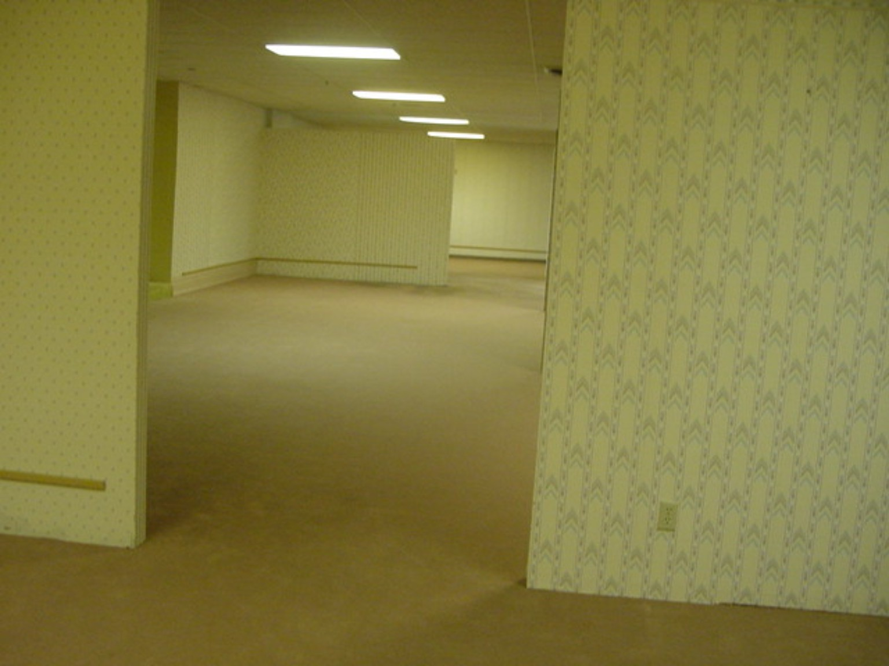
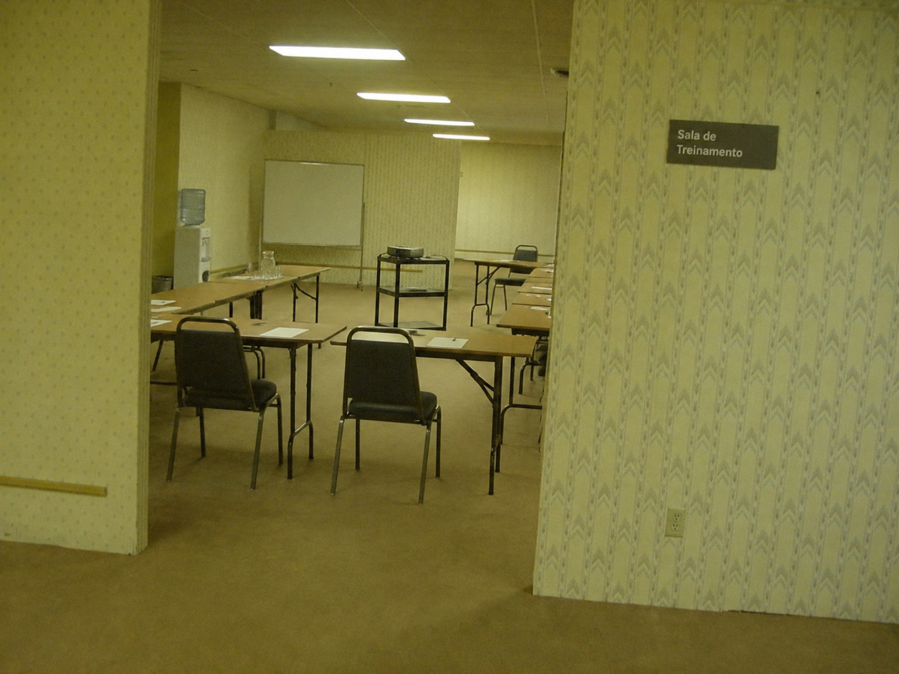
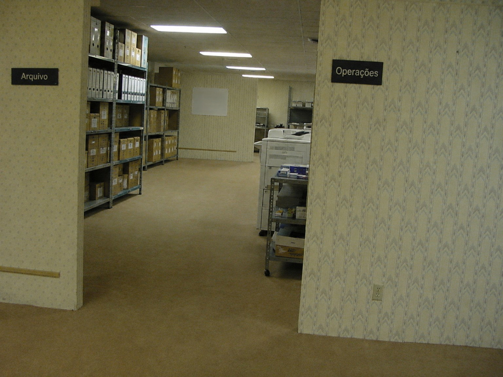
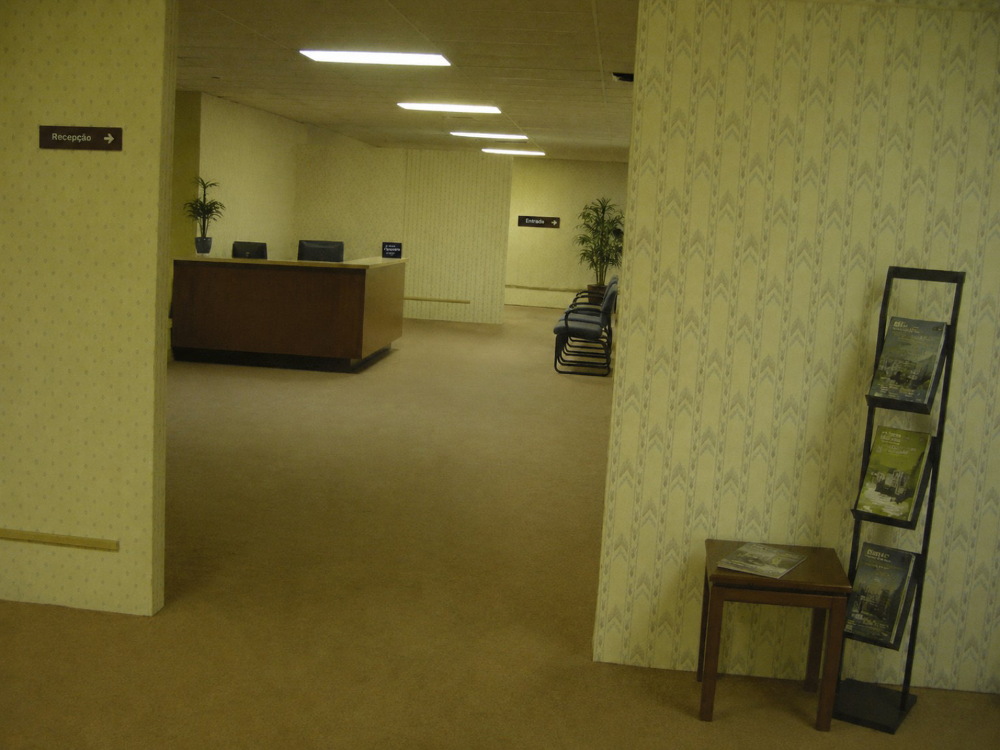
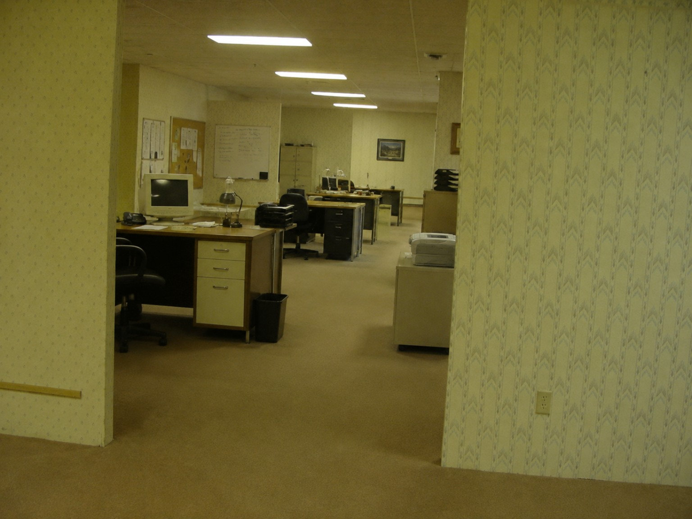
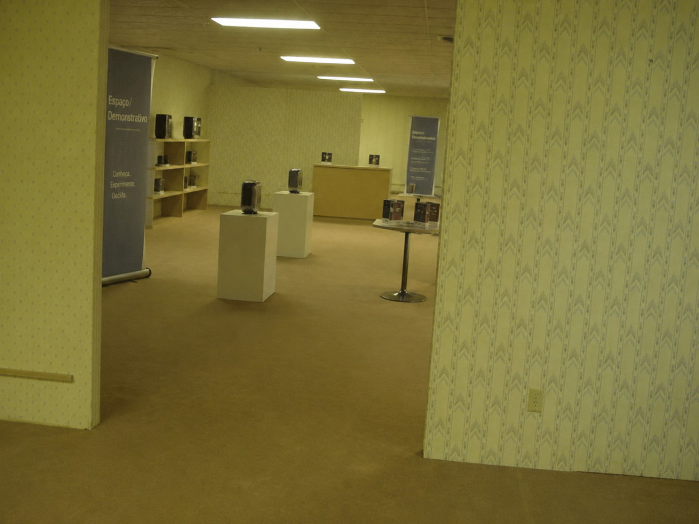
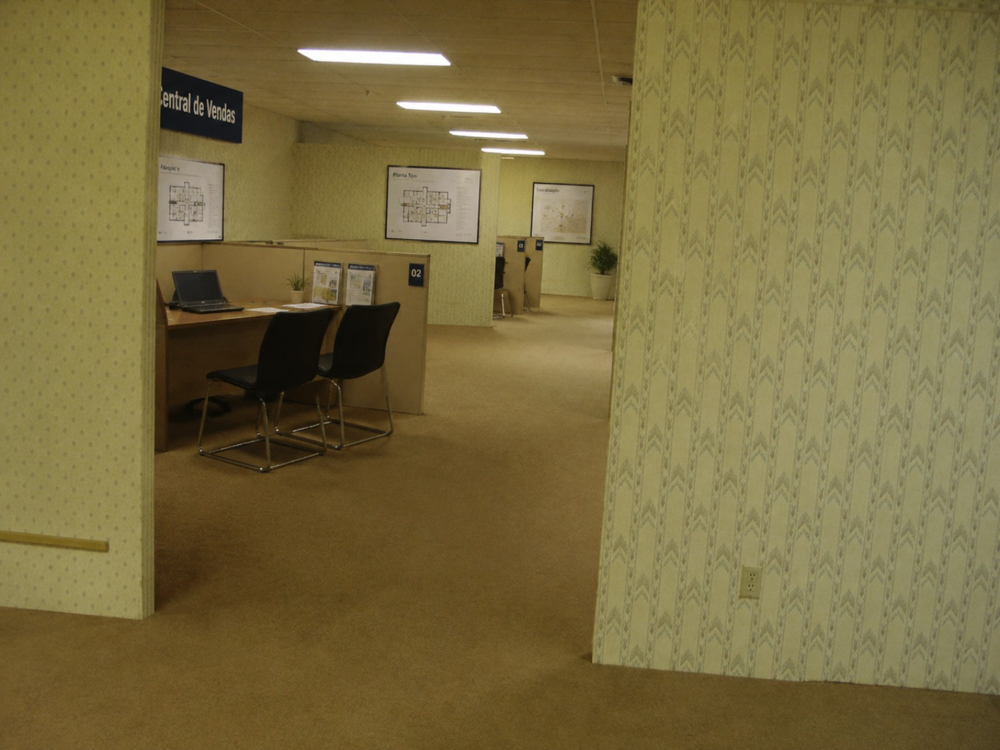
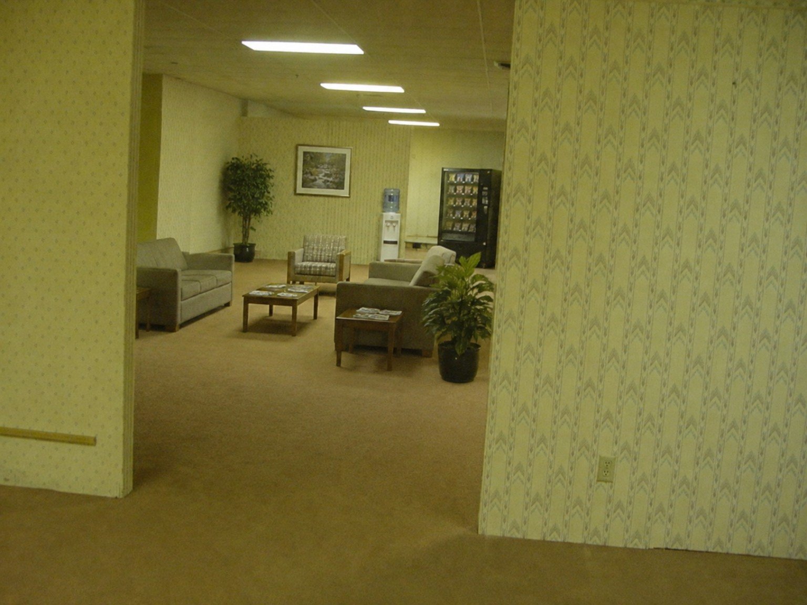

Circulação contínua
Corredores largos e sequenciais permitem fluxo constante entre setores, sem interrupções ou gargalos evidentes.
Unidade corporativa / setor interno 811
Estrutura interna para operações em expansão.
Ambientes amplos, circulação contínua e uma estrutura interna projetada para empresas que precisam crescer sem limites aparentes.
Alguns visitantes relatam a sensação de que o espaço continua além do previsto em projeto.
Posicionamento
Enquanto edifícios tradicionais limitam operação, circulação e expansão, este projeto oferece uma estrutura incomum: ambientes que se conectam de forma fluida, com baixa interferência visual e alto potencial de ocupação.
É uma solução para empresas, centros de distribuição, equipes operacionais, arquivos, call centers, laboratórios criativos e negócios que precisam de continuidade.
A arquitetura evita rupturas bruscas. Um corredor leva a outro. Uma sala se abre para a próxima. A circulação parece natural, mesmo quando a distância percorrida não corresponde exatamente à metragem informada.
Corredores largos e sequenciais permitem fluxo constante entre setores, sem interrupções ou gargalos evidentes.
A distribuição interna favorece crescimento por módulos, com espaços que podem ser ocupados conforme a demanda aumenta.
Sistema fluorescente distribuído para manter visibilidade estável em todos os períodos de uso.
A ausência de fachadas externas e vitrines reduz distrações, exposição e interferência do ambiente urbano.
O isolamento natural da estrutura cria um ambiente concentrado, distante da movimentação convencional da cidade.
Mais controle térmico, menos variação de luz e maior previsibilidade para operações internas.
Atmosfera
O acabamento segue uma estética corporativa familiar: carpete em tons quentes, paredes claras, iluminação fria e divisões modulares.
Nada disputa atenção com sua operação.
O espaço foi pensado para funcionar como uma extensão contínua do trabalho. Sem excesso de elementos decorativos. Sem interferência urbana. Sem distrações externas.
A sensação é de permanência. Como se o ambiente tivesse sido criado para continuar funcionando, mesmo depois que todos saem.
Planta de implantação
Planta de implantação
A organização do empreendimento permite múltiplas configurações: recepção interna, áreas administrativas, salas de reunião, setores técnicos, armazenamento, operação, descanso e circulação.
A planta pode ser interpretada por blocos, facilitando a adaptação para diferentes tipos de uso. Alguns módulos apresentam continuidade espacial acima da média.

Sala de reconhecimento e ponto de transição para permanência.
Setor Leste, bloco contínuo para ocupação progressiva.
Edificação paralela, isolada do fluxo principal.
Possibilidades
Ao longo do reconhecimento, o Backrooms revela algo raro: a mesma base espacial aceita múltiplas leituras de uso sem perder coerência. Onde antes havia vazio, surgem recepção, treinamento, arquivo, operações, vendas, área demonstrativa e permanência.
Não se trata de cenários desconectados. Trata-se de uma estrutura capaz de absorver a função exigida em cada fase da operação, mantendo a mesma continuidade material, a mesma lógica de circulação e a mesma sensação de expansão.








Visita técnica
Algumas características só ficam claras presencialmente: a profundidade dos corredores, a repetição precisa dos ambientes, a estabilidade da iluminação e a sensação de que cada setor pode levar a uma nova possibilidade de uso.
Durante a visita, nossa equipe acompanha o percurso recomendado e apresenta as áreas disponíveis para ocupação imediata.
Por segurança, recomendamos permanecer dentro da rota indicada.
Indicação comercial
Não é um endereço para qualquer negócio. É um espaço para operações que precisam sair da lógica comum de sala, rua, fachada e vitrine.
Prova / conceito
A leitura do espaço se repete em três pontos: escala percebida, continuidade dos ambientes e limites internos pouco óbvios. O resultado é um imóvel que funciona como estrutura operacional e, ao mesmo tempo, como experiência de reconhecimento.
O espaço parece maior à medida que a circulação avança. Para empresas em expansão, isso se traduz em margem de crescimento.
Os módulos mantêm linguagem visual consistente mesmo quando mudam de função, reduzindo ruptura entre setores.
A planta organiza o percurso, mas a experiência física sugere uma profundidade maior do que a leitura inicial.
Relatos de uso real
Empresas que ocuparam a Unidade 811 em fases de expansão, reorganização interna e operação temporária relatam a mesma percepção: o espaço se adapta antes de parecer cheio.
Apresentação comercial
Conheça um espaço corporativo raro, com alta capacidade de adaptação e uma experiência interna difícil de comparar com qualquer outro imóvel disponível no mercado.
Solicite a apresentação comercial e descubra se este endereço faz sentido para a próxima fase da sua empresa.
Ambientes conectados para operações que precisam crescer sem interrupção.
Sem ruído urbano, sem vitrines e sem distrações visuais.
Configuração flexível para diferentes modelos de ocupação.
Áreas internas que parecem se expandir além da leitura convencional da planta.